Chapter 9: Microbial Growth¶
Introduction¶
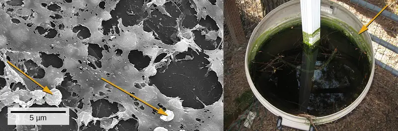
We are all familiar with the slimy layer on a pond surface or that makes rocks slippery. These are examples of biofilms—microorganisms embedded in thin layers of matrix material (Figure 9.1). Biofilms were long considered random assemblages of cells and had little attention from researchers. Recently, progress in visualization and biochemical methods has revealed that biofilms are an organized ecosystem within which many cells, usually of different species of bacteria, fungi, and algae, interact through cell signaling and coordinated responses. The biofilm provides a protected environment in harsh conditions and aids colonization by microorganisms. Biofilms also have clinical importance. They form on medical devices, resist routine cleaning and sterilization, and cause health-acquired infections. Within the body, biofilms form on the teeth as plaque, in the lungs of patients with cystic fibrosis, and on the cardiac tissue of patients with endocarditis. The slime layer helps protect the cells from host immune defenses and antibiotic treatments.
Biofilms don't only exist on Earth. They have been frequent occupants (and problems) on the International Space Station. Bacterial and fungal biofilms grow on a number of space station objects and within systems. In some cases, growth has been so significant that hoses and other components had to be completely replaced. While this is difficult on the ISS, it poses even greater risk for longer-range travel planned for the future. As described later in the chapter, a group of scientists has devised a method to prevent growth of biofilms through surface preparation: reducing the ability of the microorganisms to adhere to materials.
Studying biofilms requires new approaches. Because of the cells’ adhesion properties, many of the methods for culturing and counting cells that are explored in this chapter are not easily applied to biofilms. This is the beginning of a new era of challenges and rewarding insight into the ways that microorganisms grow and thrive in nature.
9.1 How Microbes Grow¶
Learning Objectives
By the end of this section, you will be able to:
- Define the generation time for growth based on binary fission
- Identify and describe the activities of microorganisms undergoing typical phases of binary fission (simple cell division) in a growth curve
- Explain several laboratory methods used to determine viable and total cell counts in populations undergoing exponential growth
- Describe examples of cell division not involving binary fission, such as budding or fragmentation
- Describe the formation and characteristics of biofilms
- Identify health risks associated with biofilms and how they are addressed
- Describe quorum sensing and its role in cell-to-cell communication and coordination of cellular activities
Clinical Focus: Part 1
Jeni, a 24-year-old pregnant woman in her second trimester, visits a clinic with complaints of high fever, 38.9 °C (102 °F), fatigue, and muscle aches—typical flu-like signs and symptoms. Jeni exercises regularly and follows a nutritious diet with emphasis on organic foods, including raw milk that she purchases from a local farmer’s market. All of her immunizations are up to date. However, the health-care provider who sees Jeni is concerned and orders a blood sample to be sent for testing by the microbiology laboratory.
- Why is the health-care provider concerned about Jeni’s signs and symptoms?
Jump to the next Clinical Focus box
The bacterial cell cycle involves the formation of new cells through the replication of DNA and partitioning of cellular components into two daughter cells. In prokaryotes, reproduction is always asexual, although extensive genetic recombination in the form of horizontal gene transfer takes place, as will be explored in a different chapter. Most bacteria have a single circular chromosome; however, some exceptions exist. For example, Borrelia burgdorferi, the causative agent of Lyme disease, has a linear chromosome.
Binary Fission¶
The most common mechanism of cell replication in bacteria is a process called binary fission, which is depicted in Figure 9.2. Before dividing, the cell grows and increases its number of cellular components. Next, the replication of DNA starts at a location on the circular chromosome called the origin of replication, where the chromosome is attached to the inner cell membrane. Replication continues in opposite directions along the chromosome until the terminus is reached.
The center of the enlarged cell constricts until two daughter cells are formed, each offspring receiving a complete copy of the parental genome and a division of the cytoplasm (cytokinesis). This process of cytokinesis and cell division is directed by a protein called FtsZ. FtsZ assembles into a Z ring on the cytoplasmic membrane (Figure 9.3). The Z ring is anchored by FtsZ-binding proteins and defines the division plane between the two daughter cells. Additional proteins required for cell division are added to the Z ring to form a structure called the divisome. The divisome activates to produce a peptidoglycan cell wall and build a septum that divides the two daughter cells. The daughter cells are separated by the division septum, where all of the cells’ outer layers (the cell wall and outer membranes, if present) must be remodeled to complete division. For example, we know that specific enzymes break bonds between the monomers in peptidoglycans and allow addition of new subunits along the division septum.
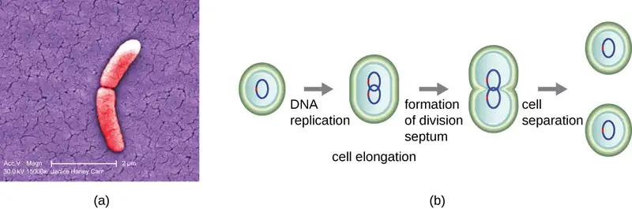
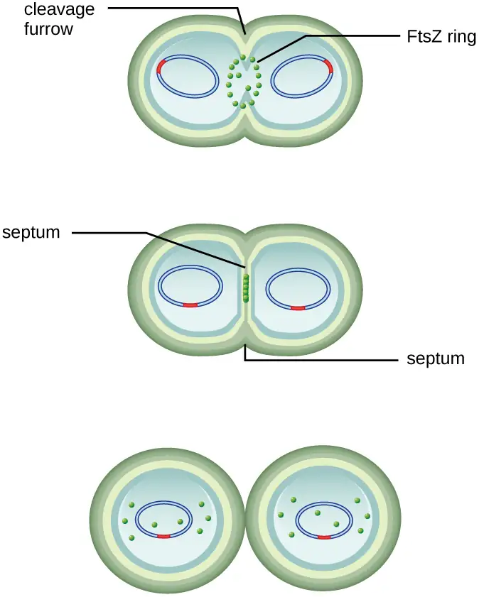
Check Your Understanding
- What is the name of the protein that assembles into a Z ring to initiate cytokinesis and cell division?
Generation Time¶
In eukaryotic organisms, the generation time is the time between the same points of the life cycle in two successive generations. For example, the typical generation time for the human population is 25 years. This definition is not practical for bacteria, which may reproduce rapidly or remain dormant for thousands of years. In prokaryotes (Bacteria and Archaea), the generation time is also called the doubling time and is defined as the time it takes for the population to double through one round of binary fission. Bacterial doubling times vary enormously. Whereas Escherichia coli can double in as little as 20 minutes under optimal growth conditions in the laboratory, bacteria of the same species may need several days to double in especially harsh environments. Most pathogens grow rapidly, like E. coli, but there are exceptions. For example, Mycobacterium tuberculosis, the causative agent of tuberculosis, has a generation time of between 15 and 20 hours. On the other hand, M. leprae, which causes Hansen’s disease (leprosy), grows much more slowly, with a doubling time of 14 days.
Micro Connections: Calculating Number of Cells
It is possible to predict the number of cells in a population when they divide by binary fission at a constant rate. As an example, consider what happens if a single cell divides every 30 minutes for 24 hours. The diagram in Figure 9.4 shows the increase in cell numbers for the first three generations.
The number of cells increases exponentially and can be expressed as 2n, where n is the number of generations. If cells divide every 30 minutes, after 24 hours, 48 divisions would have taken place. If we apply the formula 2n, where n is equal to 48, the single cell would give rise to 248 or 281,474,976,710,656 cells at 48 generations (24 hours). When dealing with such huge numbers, it is more practical to use scientific notation. Therefore, we express the number of cells as 2.8 × 1014 cells.
In our example, we used one cell as the initial number of cells. For any number of starting cells, the formula is adapted as follows:
Nn is the number of cells at any generation n, N0 is the initial number of cells, and n is the number of generations.
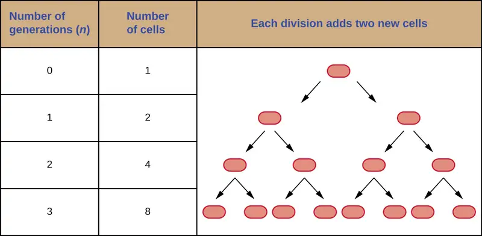
Check Your Understanding
- With a doubling time of 30 minutes and a starting population size of 1 × 105 cells, how many cells will be present after 2 hours, assuming no cell death?
The Growth Curve¶
Microorganisms grown in closed culture (also known as a batch culture), in which no nutrients are added and most waste is not removed, follow a reproducible growth pattern referred to as the growth curve. An example of a batch culture in nature is a pond in which a small number of cells grow in a closed environment. The culture density is defined as the number of cells per unit volume. In a closed environment, the culture density is also a measure of the number of cells in the population. Infections of the body do not always follow the growth curve, but correlations can exist depending upon the site and type of infection. When the number of live cells is plotted against time, distinct phases can be observed in the curve (Figure 9.5).
![A graph with time on the X axis and logarithm of living bacterial cells on the Y axis. The line of the graph begins towards the bottom of the Y axis and is flat for a short time. This is labeled 1) lag phase: no increase in number of living bacterial cells. Next the line slopes upwards. This is labeled Log phase: exponential increase in number of living bacterial cells. Next the line flattens again. This is labeled 3) Stationary phase: plateau in number of living bacterial cells; rate of cell division and death roughly equal. Final the line slopes downwards. This is labeled 4) Death or decline phase: exponential decrease in number of living bacterial cells.](img/osc-microbio-09-01-growthcurv.webp)
The Lag Phase¶
The beginning of the growth curve represents a small number of cells, referred to as an inoculum, that are added to a fresh culture medium, a nutritional broth that supports growth. The initial phase of the growth curve is called the lag phase, during which cells are gearing up for the next phase of growth. The number of cells does not change during the lag phase; however, cells grow larger and are metabolically active, synthesizing proteins needed to grow within the medium. If any cells were damaged or shocked during the transfer to the new medium, repair takes place during the lag phase. The duration of the lag phase is determined by many factors, including the species and genetic make-up of the cells, the composition of the medium, and the size of the original inoculum.
The Log Phase¶
In the logarithmic (log) growth phase, sometimes called exponential growth phase, the cells are actively dividing by binary fission and their number increases exponentially. For any given bacterial species, the generation time under specific growth conditions (nutrients, temperature, pH, and so forth) is genetically determined, and this generation time is called the intrinsic growth rate. During the log phase, the relationship between time and number of cells is not linear but exponential; however, the growth curve is often plotted on a semilogarithmic graph, as shown in Figure 9.6, which gives the appearance of a linear relationship.
![a) An arithmetic scale graph showing log phase growth. The X axis is time (hours) and the Y ais is number of cells. The line on this graph starts fairly flat with readings of (1,2) and (5,32) but quickly slopes up steeply with a final reading of (10, 1024). B) is a semilog scale graph of log phase growth. The X axis is time (hours) and the Y axis is log 10 number of cells. The Y axis more clearly show the difference between 10 superscript 1 and 10 superscript 3. The line on this graph is a straight line diagonally across the graph with points of (1,2), (5,32) and (10,1024) – just like the first graph. The equation for both graphs is N=2 superscript n.](img/osc-microbio-09-01-jgrowthcur.webp)
Cells in the log phase show constant growth rate and uniform metabolic activity. For this reason, cells in the log phase are preferentially used for industrial applications and research work. The log phase is also the stage where bacteria are the most susceptible to the action of disinfectants and common antibiotics that affect protein, DNA, and cell-wall synthesis.
Stationary Phase¶
As the number of cells increases through the log phase, several factors contribute to a slowing of the growth rate. Waste products accumulate and nutrients are gradually used up. In addition, gradual depletion of oxygen begins to limit aerobic cell growth. This combination of unfavorable conditions slows and finally stalls population growth. The total number of live cells reaches a plateau referred to as the stationary phase (Figure 9.5). In this phase, the number of new cells created by cell division is now equivalent to the number of cells dying; thus, the total population of living cells is relatively stagnant. The culture density in a stationary culture is constant. The culture’s carrying capacity, or maximum culture density, depends on the types of microorganisms in the culture and the specific conditions of the culture; however, carrying capacity is constant for a given organism grown under the same conditions.
During the stationary phase, cells switch to a survival mode of metabolism. As growth slows, so too does the synthesis of peptidoglycans, proteins, and nucleic-acids; thus, stationary cultures are less susceptible to antibiotics that disrupt these processes. In bacteria capable of producing endospores, many cells undergo sporulation during the stationary phase. Secondary metabolites, including antibiotics, are synthesized in the stationary phase. In certain pathogenic bacteria, the stationary phase is also associated with the expression of virulence factors, products that contribute to a microbe’s ability to survive, reproduce, and cause disease in a host organism. For example, quorum sensing in Staphylococcus aureus initiates the production of enzymes that can break down human tissue and cellular debris, clearing the way for bacteria to spread to new tissue where nutrients are more plentiful.
The Death Phase¶
As a culture medium accumulates toxic waste and nutrients are exhausted, cells die in greater and greater numbers. Soon, the number of dying cells exceeds the number of dividing cells, leading to an exponential decrease in the number of cells (Figure 9.5). This is the aptly named death phase, sometimes called the decline phase. Many cells lyse and release nutrients into the medium, allowing surviving cells to maintain viability and form endospores. A few cells, the so-called persisters, are characterized by a slow metabolic rate. Persister cells are medically important because they are associated with certain chronic infections, such as tuberculosis, that do not respond to antibiotic treatment.
Sustaining Microbial Growth¶
The growth pattern shown in Figure 9.5 takes place in a closed environment; nutrients are not added and waste and dead cells are not removed. In many cases, though, it is advantageous to maintain cells in the logarithmic phase of growth. One example is in industries that harvest microbial products. A chemostat (Figure 9.7) is used to maintain a continuous culture in which nutrients are supplied at a steady rate. A controlled amount of air is mixed in for aerobic processes. Bacterial suspension is removed at the same rate as nutrients flow in to maintain an optimal growth environment.
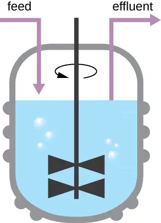
Check Your Understanding
- During which phase does growth occur at the fastest rate?
- Name two factors that limit microbial growth.
Measurement of Bacterial Growth¶
Estimating the number of bacterial cells in a sample, known as a bacterial count, is a common task performed by microbiologists. The number of bacteria in a clinical sample serves as an indication of the extent of an infection. Quality control of drinking water, food, medication, and even cosmetics relies on estimates of bacterial counts to detect contamination and prevent the spread of disease. Two major approaches are used to measure cell number. The direct methods involve counting cells, whereas the indirect methods depend on the measurement of cell presence or activity without actually counting individual cells. Both direct and indirect methods have advantages and disadvantages for specific applications.
Direct Cell Count¶
Direct cell count refers to counting the cells in a liquid culture or colonies on a plate. It is a direct way of estimating how many organisms are present in a sample. Let’s look first at a simple and fast method that requires only a specialized slide and a compound microscope.
The simplest way to count bacteria is called the direct microscopic cell count, which involves transferring a known volume of a culture to a calibrated slide and counting the cells under a light microscope. The calibrated slide is called a Petroff-Hausser chamber (Figure 9.8) and is similar to a hemocytometer used to count red blood cells. The central area of the counting chamber is etched into squares of various sizes. A sample of the culture suspension is added to the chamber under a coverslip that is placed at a specific height from the surface of the grid. It is possible to estimate the concentration of cells in the original sample by counting individual cells in a number of squares and determining the volume of the sample observed. The area of the squares and the height at which the coverslip is positioned are specified for the chamber. The concentration must be corrected for dilution if the sample was diluted before enumeration.
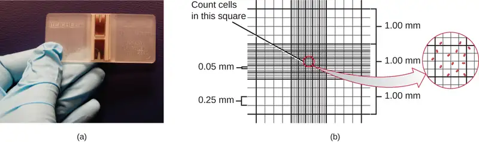
Cells in several small squares must be counted and the average taken to obtain a reliable measurement. The advantages of the chamber are that the method is easy to use, relatively fast, and inexpensive. On the downside, the counting chamber does not work well with dilute cultures because there may not be enough cells to count.
Using a counting chamber does not necessarily yield an accurate count of the number of live cells because it is not always possible to distinguish between live cells, dead cells, and debris of the same size under the microscope. However, newly developed fluorescence staining techniques make it possible to distinguish viable and dead bacteria. These viability stains (or live stains) bind to nucleic acids, but the primary and secondary stains differ in their ability to cross the cytoplasmic membrane. The primary stain, which fluoresces green, can penetrate intact cytoplasmic membranes, staining both live and dead cells. The secondary stain, which fluoresces red, can stain a cell only if the cytoplasmic membrane is considerably damaged. Thus, live cells fluoresce green because they only absorb the green stain, whereas dead cells appear red because the red stain displaces the green stain on their nucleic acids (Figure 9.9).
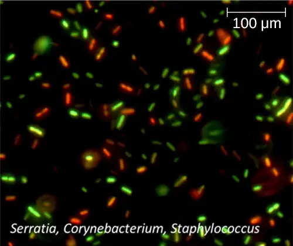
Another technique uses an electronic cell counting device (Coulter counter) to detect and count the changes in electrical resistance in a saline solution. A glass tube with a small opening is immersed in an electrolyte solution. A first electrode is suspended in the glass tube. A second electrode is located outside of the tube. As cells are drawn through the small aperture in the glass tube, they briefly change the resistance measured between the two electrodes and the change is recorded by an electronic sensor (Figure 9.10); each resistance change represents a cell. The method is rapid and accurate within a range of concentrations; however, if the culture is too concentrated, more than one cell may pass through the aperture at any given time and skew the results. This method also does not differentiate between live and dead cells.
Direct counts provide an estimate of the total number of cells in a sample. However, in many situations, it is important to know the number of live, or viable, cells. Counts of live cells are needed when assessing the extent of an infection, the effectiveness of antimicrobial compounds and medication, or contamination of food and water.
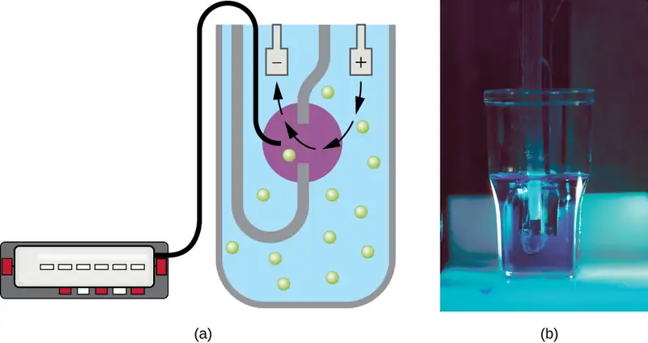
Check Your Understanding
- Why would you count the number of cells in more than one square in the Petroff-Hausser chamber to estimate cell numbers?
- In the viability staining method, why do dead cells appear red?
Plate Count¶
The viable plate count, or simply plate count, is a count of viable or live cells. It is based on the principle that viable cells replicate and give rise to visible colonies when incubated under suitable conditions for the specimen. The results are usually expressed as colony-forming units per milliliter (CFU/mL) rather than cells per milliliter because more than one cell may have landed on the same spot to give rise to a single colony. Furthermore, samples of bacteria that grow in clusters or chains are difficult to disperse and a single colony may represent several cells. Some cells are described as viable but nonculturable and will not form colonies on solid media. For all these reasons, the viable plate count is considered a low estimate of the actual number of live cells. These limitations do not detract from the usefulness of the method, which provides estimates of live bacterial numbers.
Microbiologists typically count plates with 30–300 colonies. Samples with too few colonies (<30) do not give statistically reliable numbers, and overcrowded plates (>300 colonies) make it difficult to accurately count individual colonies. Also, counts in this range minimize occurrences of more than one bacterial cell forming a single colony. Thus, the calculated CFU is closer to the true number of live bacteria in the population.
There are two common approaches to inoculating plates for viable counts: the pour plate and the spread plate methods. Although the final inoculation procedure differs between these two methods, they both start with a serial dilution of the culture.
Serial Dilution¶
The serial dilution of a culture is an important first step before proceeding to either the pour plate or spread plate method. The goal of the serial dilution process is to obtain plates with CFUs in the range of 30–300, and the process usually involves several dilutions in multiples of 10 to simplify calculation. The number of serial dilutions is chosen according to a preliminary estimate of the culture density. Figure 9.11 illustrates the serial dilution method.
A fixed volume of the original culture, 1.0 mL, is added to and thoroughly mixed with the first dilution tube solution, which contains 9.0 mL of sterile broth. This step represents a dilution factor of 10, or 1:10, compared with the original culture. From this first dilution, the same volume, 1.0 mL, is withdrawn and mixed with a fresh tube of 9.0 mL of dilution solution. The dilution factor is now 1:100 compared with the original culture. This process continues until a series of dilutions is produced that will bracket the desired cell concentration for accurate counting. From each tube, a sample is plated on solid medium using either the pour plate method (Figure 9.12) or the spread plate method (Figure 9.13). The plates are incubated until colonies appear. Two to three plates are usually prepared from each dilution and the numbers of colonies counted on each plate are averaged. In all cases, thorough mixing of samples with the dilution medium (to ensure the cell distribution in the tube is random) is paramount to obtaining reliable results.
![A diagram of serial dilution. A large beaker on the left contains a dark solution. 1 ml is moved from this beaker to a tube containing 9 ml of broth. This tube has a dilution of 1:10 and is lighter in color than the original beaker. A sample of 0.1 ml from this tube is put on an agar plate; the colonies are too numerous to count. 1 ml is taken out of this tube and placed in a tube containing 9 ml of broth. This tube now has a dilution of 1:100 from the original beaker and is even lighter in color. 0.1 ml is plated on an a agar plate and the colonies are still too numerous to count. 1 ml is taken from this tube and placed in another tube containing 9 ml broth. This is now a dilution of 1:1000 from the original beaker and the tube is lighter than the last. 0.1 ml is taken out of this tube and placed on an agar plate; there are 389 colonies. 1 ml is taken out of this tube and placed in another tube containing 9 ml broth. This is now a dilution of 1:10,000 from the original beaker and this tube is even lighter than the last. 0.1 ml is taken out of this tube and placed on an agar plate; there are 50 colonies. 1 ml is taken out of this tube and placed in a tube containing 9 ml of broth. This is a dilution of 1:100,000 from the original beaker and this is the lightest tube of all. 0.1 ml is taken from this tube and placed on an agar plate; there are 2 colonies.](img/osc-microbio-09-01-serialtub.webp)
The dilution factor is used to calculate the number of cells in the original cell culture. In our example, an average of 50 colonies was counted on the plates obtained from the 1:10,000 dilution. Because only 0.1 mL of suspension was pipetted on the plate, the multiplier required to reconstitute the original concentration is 10 × 10,000. The number of CFU per mL is equal to 50 × 10 × 10,000 = 5,000,000. The number of bacteria in the culture is estimated as 5 million cells/mL. The colony count obtained from the 1:1000 dilution was 389, well below the expected 500 for a 10-fold difference in dilutions. This highlights the issue of inaccuracy when colony counts are greater than 300 and more than one bacterial cell grows into a single colony.
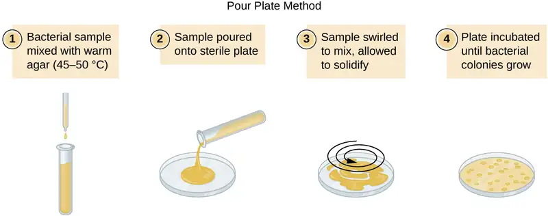
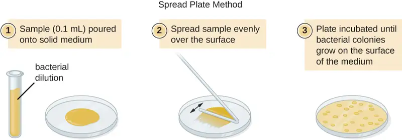
A very dilute sample—drinking water, for example—may not contain enough organisms to use either of the plate count methods described. In such cases, the original sample must be concentrated rather than diluted before plating. This can be accomplished using a modification of the plate count technique called the membrane filtration technique. Known volumes are vacuum-filtered aseptically through a membrane with a pore size small enough to trap microorganisms. The membrane is transferred to a Petri plate containing an appropriate growth medium. Colonies are counted after incubation. Calculation of the cell density is made by dividing the cell count by the volume of filtered liquid.
Link to Learning
Watch this video for demonstrations of serial dilutions and spread plate techniques.
The Most Probable Number¶
The number of microorganisms in dilute samples is usually too low to be detected by the plate count methods described thus far. For these specimens, microbiologists routinely use the most probable number (MPN) method, a statistical procedure for estimating of the number of viable microorganisms in a sample. Often used for water and food samples, the MPN method evaluates detectable growth by observing changes in turbidity or color due to metabolic activity.
A typical application of MPN method is the estimation of the number of coliforms in a sample of pond water. Coliforms are gram-negative rod bacteria that ferment lactose. The presence of coliforms in water is considered a sign of contamination by fecal matter. For the method illustrated in Figure 9.14, a series of three dilutions of the water sample is tested by inoculating five lactose broth tubes with 10 mL of sample, five lactose broth tubes with 1 mL of sample, and five lactose broth tubes with 0.1 mL of sample. The lactose broth tubes contain a pH indicator that changes color from red to yellow when the lactose is fermented. After inoculation and incubation, the tubes are examined for an indication of coliform growth by a color change in media from red to yellow. The first set of tubes (10-mL sample) showed growth in all the tubes; the second set of tubes (1 mL) showed growth in two tubes out of five; in the third set of tubes, no growth is observed in any of the tubes (0.1-mL dilution). The numbers 5, 2, and 0 are compared with Figure B1 in Appendix B, which has been constructed using a probability model of the sampling procedure. From our reading of the table, we conclude that 49 is the most probable number of bacteria per 100 mL of pond water.
![A diagram where the original sample of pond water is diluted into tubes containing lactose broth (a pink broth). 10 mL of the sample is placed into each of 5 lactose broth tubes. Another 5 tubes get 1 mL each of the sample. Another 5 tubes get 0.1 mL of sample. After 24 hours of incubation at 37°C some tubes have a color change. All of the 5 tubes containing 10 mL of the sample turned yellow and show gas in the smaller inner tube. 2 of the 5 tubes that got 1 mL of the original sample turned yellow and show gas; 3 of these tubes remain pink. All of the tubes that got 0.1 mL of the original sample remain pink.](img/osc-microbio-09-01-mpntubes.webp)
Check Your Understanding
- What is a colony-forming unit?
- What two methods are frequently used to estimate bacterial numbers in water samples?
Indirect Cell Counts¶
Besides direct methods of counting cells, other methods, based on an indirect detection of cell density, are commonly used to estimate and compare cell densities in a culture. The foremost approach is to measure the turbidity (cloudiness) of a sample of bacteria in a liquid suspension. The laboratory instrument used to measure turbidity is called a spectrophotometer (Figure 9.15). In a spectrophotometer, a light beam is transmitted through a bacterial suspension, the light passing through the suspension is measured by a detector, and the amount of light passing through the sample and reaching the detector is converted to either percent transmission or a logarithmic value called absorbance (optical density). As the numbers of bacteria in a suspension increase, the turbidity also increases and causes less light to reach the detector. The decrease in light passing through the sample and reaching the detector is associated with a decrease in percent transmission and increase in absorbance measured by the spectrophotometer.
Measuring turbidity is a fast method to estimate cell density as long as there are enough cells in a sample to produce turbidity. It is possible to correlate turbidity readings to the actual number of cells by performing a viable plate count of samples taken from cultures having a range of absorbance values. Using these values, a calibration curve is generated by plotting turbidity as a function of cell density. Once the calibration curve has been produced, it can be used to estimate cell counts for all samples obtained or cultured under similar conditions and with densities within the range of values used to construct the curve.
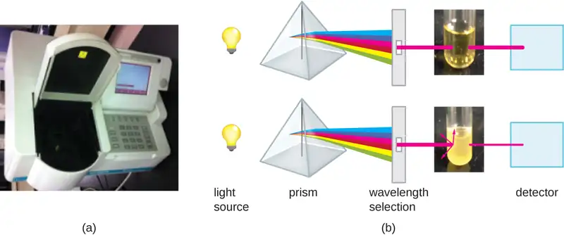
Measuring dry weight of a culture sample is another indirect method of evaluating culture density without directly measuring cell counts. The cell suspension used for weighing must be concentrated by filtration or centrifugation, washed, and then dried before the measurements are taken. The degree of drying must be standardized to account for residual water content. This method is especially useful for filamentous microorganisms, which are difficult to enumerate by direct or viable plate count.
As we have seen, methods to estimate viable cell numbers can be labor intensive and take time because cells must be grown. Recently, indirect ways of measuring live cells have been developed that are both fast and easy to implement. These methods measure cell activity by following the production of metabolic products or disappearance of reactants. Adenosine triphosphate (ATP) formation, biosynthesis of proteins and nucleic acids, and consumption of oxygen can all be monitored to estimate the number of cells.
Check Your Understanding
- What is the purpose of a calibration curve when estimating cell count from turbidity measurements?
- What are the newer indirect methods of counting live cells?
Alternative Patterns of Cell Division¶
Binary fission is the most common pattern of cell division in prokaryotes, but it is not the only one. Other mechanisms usually involve asymmetrical division (as in budding) or production of spores in aerial filaments.
In some cyanobacteria, many nucleoids may accumulate in an enlarged round cell or along a filament, leading to the generation of many new cells at once. The new cells often split from the parent filament and float away in a process called fragmentation (Figure 9.16). Fragmentation is commonly observed in the Actinomycetes, a group of gram-positive, anaerobic bacteria commonly found in soil. Another curious example of cell division in prokaryotes, reminiscent of live birth in animals, is exhibited by the giant bacterium Epulopiscium. Several daughter cells grow fully in the parent cell, which eventually disintegrates, releasing the new cells to the environment. Other species may form a long narrow extension at one pole in a process called budding. The tip of the extension swells and forms a smaller cell, the bud that eventually detaches from the parent cell. Budding is most common in yeast (Figure 9.16), but it is also observed in prosthecate bacteria and some cyanobacteria.
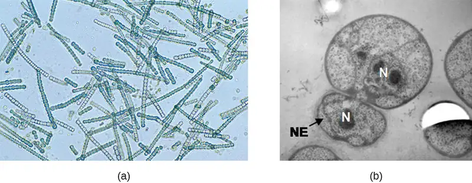
The soil bacteria Actinomyces grow in long filaments divided by septa, similar to the mycelia seen in fungi, resulting in long cells with multiple nucleoids. Environmental signals, probably related to low nutrient availability, lead to the formation of aerial filaments. Within these aerial filaments, elongated cells divide simultaneously. The new cells, which contain a single nucleoid, develop into spores that give rise to new colonies.
Check Your Understanding
- Identify at least one difference between fragmentation and budding.
Biofilms¶
In nature, microorganisms grow mainly in biofilms, complex and dynamic ecosystems that form on a variety of environmental surfaces, from industrial conduits and water treatment pipelines to rocks in river beds. Biofilms are not restricted to solid surface substrates, however. Almost any surface in a liquid environment containing some minimal nutrients will eventually develop a biofilm. Microbial mats that float on water, for example, are biofilms that contain large populations of photosynthetic microorganisms. Biofilms found in the human mouth may contain hundreds of bacterial species. Regardless of the environment where they occur, biofilms are not random collections of microorganisms; rather, they are highly structured communities that provide a selective advantage to their constituent microorganisms.
Biofilm Structure¶
Observations using confocal microscopy have shown that environmental conditions influence the overall structure of biofilms. Filamentous biofilms called streamers form in rapidly flowing water, such as freshwater streams, eddies, and specially designed laboratory flow cells that replicate growth conditions in fast-moving fluids. The streamers are anchored to the substrate by a “head” and the “tail” floats downstream in the current. In still or slow-moving water, biofilms mainly assume a mushroom-like shape. The structure of biofilms may also change with other environmental conditions such as nutrient availability.
Detailed observations of biofilms under confocal laser and scanning electron microscopes reveal clusters of microorganisms embedded in a matrix interspersed with open water channels. The extracellular matrix consists of extracellular polymeric substances (EPS) secreted by the organisms in the biofilm. The extracellular matrix represents a large fraction of the biofilm, accounting for 50%–90% of the total dry mass. The properties of the EPS vary according to the resident organisms and environmental conditions.
EPS is a hydrated gel composed primarily of polysaccharides and containing other macromolecules such as proteins, nucleic acids, and lipids. It plays a key role in maintaining the integrity and function of the biofilm. Channels in the EPS allow movement of nutrients, waste, and gases throughout the biofilm. This keeps the cells hydrated, preventing desiccation. EPS also shelters organisms in the biofilm from predation by other microbes or cells (e.g., protozoans, white blood cells in the human body).
Biofilm Formation¶
Free-floating microbial cells that live in an aquatic environment are called planktonic cells. The formation of a biofilm essentially involves the attachment of planktonic cells to a substrate, where they become sessile (attached to a surface). This occurs in stages, as depicted in Figure 9.17. The first stage involves the attachment of planktonic cells to a surface coated with a conditioning film of organic material. At this point, attachment to the substrate is reversible, but as cells express new phenotypes that facilitate the formation of EPS, they transition from a planktonic to a sessile lifestyle. The biofilm develops characteristic structures, including an extensive matrix and water channels. Appendages such as fimbriae, pili, and flagella interact with the EPS, and microscopy and genetic analysis suggest that such structures are required for the establishment of a mature biofilm. In the last stage of the biofilm life cycle, cells on the periphery of the biofilm revert to a planktonic lifestyle, sloughing off the mature biofilm to colonize new sites. This stage is referred to as dispersal.
![Diagram of the formation of a biofilm. Step 1 – the reversible attachment of planktonic cells (seconds). This is shown as a few cells with flagella attaching to a surface. Step 2 – the first colonizers become irreversibly attached (seconds to minutes). This is shown as small clusters of cells on the surface. Step 3 – Growth and cell division (hours, days). This is shown as larger clusters on the surface. Step 4 – Production of EPS and formation of water channels (hours, days). This is shown as very large clusters. Step 5 – Attachment of secondary colonizers and dispersion of microbes to new sites (days, months). This is shown as small flagellated cells leaving from the very large cluster.](img/osc-microbio-09-05-filmdiag.webp)
Within a biofilm, different species of microorganisms establish metabolic collaborations in which the waste product of one organism becomes the nutrient for another. For example, aerobic microorganisms consume oxygen, creating anaerobic regions that promote the growth of anaerobes. This occurs in many polymicrobial infections that involve both aerobic and anaerobic pathogens.
The mechanism by which cells in a biofilm coordinate their activities in response to environmental stimuli is called quorum sensing. Quorum sensing—which can occur between cells of different species within a biofilm—enables microorganisms to detect their cell density through the release and binding of small, diffusible molecules called autoinducers. When the cell population reaches a critical threshold (a quorum), these autoinducers initiate a cascade of reactions that activate genes associated with cellular functions that are beneficial only when the population reaches a critical density. For example, in some pathogens, synthesis of virulence factors only begins when enough cells are present to overwhelm the immune defenses of the host. Although mostly studied in bacterial populations, quorum sensing takes place between bacteria and eukaryotes and between eukaryotic cells such as the fungus Candida albicans, a common member of the human microbiota that can cause infections in immunocompromised individuals.
The signaling molecules in quorum sensing belong to two major classes. Gram-negative bacteria communicate mainly using N-acylated homoserine lactones, whereas gram-positive bacteria mostly use small peptides (Figure 9.18). In all cases, the first step in quorum sensing consists of the binding of the autoinducer to its specific receptor only when a threshold concentration of signaling molecules is reached. Once binding to the receptor takes place, a cascade of signaling events leads to changes in gene expression. The result is the activation of biological responses linked to quorum sensing, notably an increase in the production of signaling molecules themselves, hence the term autoinducer.
Biofilms and Human Health¶
The human body harbors many types of biofilms, some beneficial and some harmful. For example, the layers of normal microbiota lining the intestinal and respiratory mucosa play a role in warding off infections by pathogens. However, other biofilms in the body can have a detrimental effect on health. For example, the plaque that forms on teeth is a biofilm that can contribute to dental and periodontal disease. Biofilms can also form in wounds, sometimes causing serious infections that can spread. The bacterium Pseudomonas aeruginosa often colonizes biofilms in the airways of patients with cystic fibrosis, causing chronic and sometimes fatal infections of the lungs. Biofilms can also form on medical devices used in or on the body, causing infections in patients with in-dwelling catheters, artificial joints, or contact lenses.
Pathogens embedded within biofilms exhibit a higher resistance to antibiotics than their free-floating counterparts. Several hypotheses have been proposed to explain why. Cells in the deep layers of a biofilm are metabolically inactive and may be less susceptible to the action of antibiotics that disrupt metabolic activities. The EPS may also slow the diffusion of antibiotics and antiseptics, preventing them from reaching cells in the deeper layers of the biofilm. Phenotypic changes may also contribute to the increased resistance exhibited by bacterial cells in biofilms. For example, the increased production of efflux pumps, membrane-embedded proteins that actively extrude antibiotics out of bacterial cells, have been shown to be an important mechanism of antibiotic resistance among biofilm-associated bacteria. Finally, biofilms provide an ideal environment for the exchange of extrachromosomal DNA, which often includes genes that confer antibiotic resistance.
Biofilms forming on equipment such as filtration systems can compromise their performance and cause health risks. Components of CPAP (continuous positive airway pressure) machines, which are used to help people with sleep apnea, must be replaced periodically because of biofilm buildup. On the International Space Station, biofilms clog hoses and other portions of water reclamation and filtration systems -- critical elements to long-term survival in space. After years of effort, a 2023 discovery has significant implications for space travel and dwelling.
Previous approaches to prevent biofilm build-up included treating surfaces with anti-bacterial substances. But researchers Pamela Flores at University of Colorado and Samantha McBride of MIT described in a 2023 paper, these often failed when a layer of dead biofilm cells forms and becomes an anchor point for subsequent biofilms to grow. Furthermore, rapid microbial adaptation leads to resistant strains, which may lead to even greater risks for crew and equipment. So, instead of killing microorganisms, McBride and Flores -- working with Kripa Varanasi (MIT), Luis Zea (U. of Colorado), and Jonathan Galazko (NASA) -- treated surfaces with a layer of lubricant, which was infused into the tiny crevices of the surface and held there by capillary action. Experiments on Earth and on the ISS showed that the lubrication was effective at preventing biofilm growth because it eliminated microorganism adhesion. Beyond space exploration applications, the approach may be used in medical and other devices.1
Check Your Understanding
- What is the matrix of a biofilm composed of?
- What is the role of quorum sensing in a biofilm?
9.2 Oxygen Requirements for Microbial Growth¶
Learning Objectives
By the end of this section, you will be able to:
- Interpret visual data demonstrating minimum, optimum, and maximum oxygen or carbon dioxide requirements for growth
- Identify and describe different categories of microbes with requirements for growth with or without oxygen: obligate aerobe, obligate anaerobe, facultative anaerobe, aerotolerant anaerobe, microaerophile, and capnophile
- Give examples of microorganisms for each category of growth requirements
Ask most people “What are the major requirements for life?” and the answers are likely to include water and oxygen. Few would argue about the need for water, but what about oxygen? Can there be life without oxygen?
The answer is that molecular oxygen (O2) is not always needed. The earliest signs of life are dated to a period when conditions on earth were highly reducing and free oxygen gas was essentially nonexistent. Only after cyanobacteria started releasing oxygen as a byproduct of photosynthesis and the capacity of iron in the oceans for taking up oxygen was exhausted did oxygen levels increase in the atmosphere. This event, often referred to as the Great Oxygenation Event or the Oxygen Revolution, caused a massive extinction. Most organisms could not survive the powerful oxidative properties of reactive oxygen species (ROS), highly unstable ions and molecules derived from partial reduction of oxygen that can damage virtually any macromolecule or structure with which they come in contact. Singlet oxygen (O2•), superoxide \(({\text{O}_{2}}^{-}),\) peroxides (H2O2), hydroxyl radical (OH•), and hypochlorite ion (OCl−), the active ingredient of household bleach, are all examples of ROS. The organisms that were able to detoxify reactive oxygen species harnessed the high electronegativity of oxygen to produce free energy for their metabolism and thrived in the new environment.
Oxygen Requirements of Microorganisms¶
Many ecosystems are still free of molecular oxygen. Some are found in extreme locations, such as deep in the ocean or in earth’s crust; others are part of our everyday landscape, such as marshes, bogs, and sewers. Within the bodies of humans and other animals, regions with little or no oxygen provide an anaerobic environment for microorganisms. (Figure 9.19).
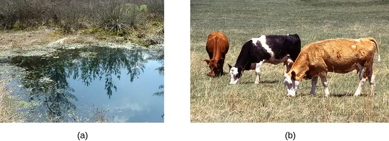
We can easily observe different requirements for molecular oxygen by growing bacteria in thioglycolate tube cultures. A test-tube culture starts with autoclaved thioglycolate medium containing a low percentage of agar to allow motile bacteria to move throughout the medium. Thioglycolate has strong reducing properties and autoclaving flushes out most of the oxygen. The tubes are inoculated with the bacterial cultures to be tested and incubated at an appropriate temperature. Over time, oxygen slowly diffuses throughout the thioglycolate tube culture from the top. Bacterial density increases in the area where oxygen concentration is best suited for the growth of that particular organism.
The growth of bacteria with varying oxygen requirements in thioglycolate tubes is illustrated in Figure 9.20. In tube A, all the growth is seen at the top of the tube. The bacteria are obligate (strict) aerobes that cannot grow without an abundant supply of oxygen. Tube B looks like the opposite of tube A. Bacteria grow at the bottom of tube B. Those are obligate anaerobes, which are killed by oxygen. Tube C shows heavy growth at the top of the tube and growth throughout the tube, a typical result with facultative anaerobes. Facultative anaerobes are organisms that thrive in the presence of oxygen but also grow in its absence by relying on fermentation or anaerobic respiration, if there is a suitable electron acceptor other than oxygen and the organism is able to perform anaerobic respiration. The aerotolerant anaerobes in tube D are indifferent to the presence of oxygen. They do not use oxygen because they usually have a fermentative metabolism, but they are not harmed by the presence of oxygen as obligate anaerobes are. Tube E on the right shows a “Goldilocks” culture. The oxygen level has to be just right for growth, not too much and not too little. These microaerophiles are bacteria that require a minimum level of oxygen for growth, about 1%–10%, well below the 21% found in the atmosphere.
Examples of obligate aerobes are Mycobacterium tuberculosis, the causative agent of tuberculosis and Micrococcus luteus, a gram-positive bacterium that colonizes the skin. Neisseria meningitidis, the causative agent of severe bacterial meningitis, and N. gonorrhoeae, the causative agent of sexually transmitted gonorrhea, are also obligate aerobes.
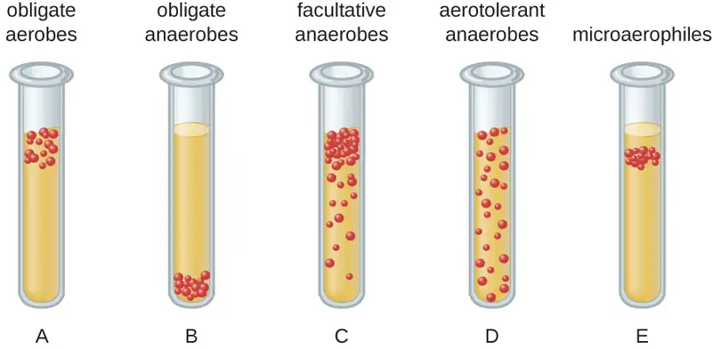
Many obligate anaerobes are found in the environment where anaerobic conditions exist, such as in deep sediments of soil, still waters, and at the bottom of the deep ocean where there is no photosynthetic life. Anaerobic conditions also exist naturally in the intestinal tract of animals. Obligate anaerobes, mainly Bacteroidetes, represent a large fraction of the microbes in the human gut. Transient anaerobic conditions exist when tissues are not supplied with blood circulation; they die and become an ideal breeding ground for obligate anaerobes. Another type of obligate anaerobe encountered in the human body is the gram-positive, rod-shaped Clostridioides and Clostridium spp. Their ability to form endospores allows them to survive in the presence of oxygen. One of the major causes of health-acquired infections is C. difficile, known as C. diff. Prolonged use of antibiotics for other infections increases the probability of a patient developing a secondary C. difficile infection. Antibiotic treatment disrupts the balance of microorganisms in the intestine and allows the colonization of the gut by Clostridioides difficile, causing a significant inflammation of the colon.
Other clostridia responsible for serious infections include C. tetani, the agent of tetanus, and C. perfringens, which causes gas gangrene. In both cases, the infection starts in necrotic tissue (dead tissue that is not supplied with oxygen by blood circulation). This is the reason that deep puncture wounds are associated with tetanus. When tissue death is accompanied by lack of circulation, gangrene is always a danger.
The study of obligate anaerobes requires special equipment. Obligate anaerobic bacteria must be grown under conditions devoid of oxygen. The most common approach is culture in an anaerobic jar (Figure 9.21). Anaerobic jars include chemical packs that remove oxygen and release carbon dioxide (CO2). An anaerobic chamber is an enclosed box from which all oxygen is removed. Gloves sealed to openings in the box allow handling of the cultures without exposing the culture to air (Figure 9.21).
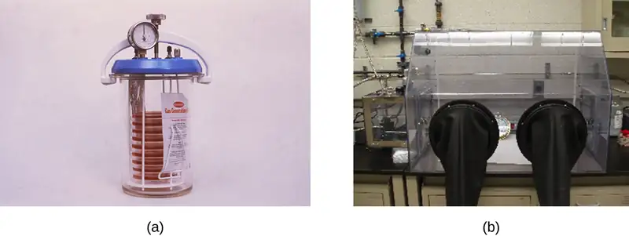
Staphylococci and Enterobacteriaceae are examples of facultative anaerobes. Staphylococci are found on the skin and upper respiratory tract. Enterobacteriaceae are found primarily in the gut and upper respiratory tract but can sometimes spread to the urinary tract, where they are capable of causing infections. It is not unusual to see mixed bacterial infections in which the facultative anaerobes use up the oxygen, creating an environment for the obligate anaerobes to flourish.
Examples of aerotolerant anaerobes include lactobacilli and streptococci, both found in the oral microbiota. Campylobacter jejuni, which causes gastrointestinal infections, is an example of a microaerophile and is grown under low-oxygen conditions.
The optimum oxygen concentration, as the name implies, is the ideal concentration of oxygen for a particular microorganism. The lowest concentration of oxygen that allows growth is called the minimum permissive oxygen concentration. The highest tolerated concentration of oxygen is the maximum permissive oxygen concentration. The organism will not grow outside the range of oxygen levels found between the minimum and maximum permissive oxygen concentrations.
Check Your Understanding
- Would you expect the oldest bacterial lineages to be aerobic or anaerobic?
- Which bacteria grow at the top of a thioglycolate tube, and which grow at the bottom of the tube?
Case in Point: An Unwelcome Anaerobe
Charles is a retired bus driver who developed type 2 diabetes over 10 years ago. Since his retirement, his lifestyle has become very sedentary and he has put on a substantial amount of weight. Although he has felt tingling and numbness in his left foot for a while, he has not been worried because he thought his foot was simply “falling asleep.” Recently, a scratch on his foot does not seem to be healing and is becoming increasingly ugly. Because the sore did not bother him much, Charles figured it could not be serious until his daughter noticed a purplish discoloration spreading on the skin and oozing (Figure 9.22). When he was finally seen by his physician, Charles was rushed to the operating room. His open sore, or ulcer, is the result of a diabetic foot.
The concern here is that gas gangrene may have taken hold in the dead tissue. The most likely agent of gas gangrene is Clostridium perfringens, an endospore-forming, gram-positive bacterium. It is an obligate anaerobe that grows in tissue devoid of oxygen. Since dead tissue is no longer supplied with oxygen by the circulatory system, the dead tissue provides pockets of ideal environment for the growth of C. perfringens.
A surgeon examines the ulcer and radiographs of Charles’s foot and determines that the bone is not yet infected. The wound will have to be surgically debrided (debridement refers to the removal of dead and infected tissue) and a sample sent for microbiological lab analysis, but Charles will not have to have his foot amputated. Many diabetic patients are not so lucky. In 2008, nearly 70,000 diabetic patients in the United States lost a foot or limb to amputation, according to statistics from the Centers for Disease Control and Prevention.2
- Which growth conditions would you recommend for the detection of C. perfringens?
Detoxification of Reactive Oxygen Species¶
Aerobic respiration constantly generates reactive oxygen species (ROS), byproducts that must be detoxified. Even organisms that do not use aerobic respiration need some way to break down some of the ROS that may form from atmospheric oxygen. Three main enzymes break down those toxic byproducts: superoxide dismutase, peroxidase, and catalase. Each one catalyzes a different reaction. Reactions of type seen in Reaction 1 are catalyzed by peroxidases.
In these reactions, an electron donor (reduced compound; e.g., reduced nicotinamide adenine dinucleotide [NADH]) oxidizes hydrogen peroxide, or other peroxides, to water. The enzymes play an important role by limiting the damage caused by peroxidation of membrane lipids. Reaction 2 is mediated by the enzyme superoxide dismutase (SOD) and breaks down the powerful superoxide anions generated by aerobic metabolism:
The enzyme catalase converts hydrogen peroxide to water and oxygen as shown in Reaction 3.
Obligate anaerobes usually lack all three enzymes. Aerotolerant anaerobes do have SOD but no catalase. Reaction 3, shown occurring in Figure 9.23, is the basis of a useful and rapid test to distinguish streptococci, which are aerotolerant and do not possess catalase, from staphylococci, which are facultative anaerobes. A sample of culture rapidly mixed in a drop of 3% hydrogen peroxide will release bubbles if the culture is catalase positive.
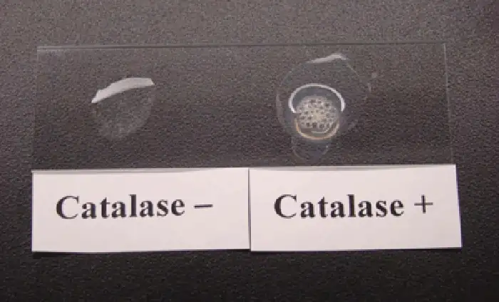
Bacteria that grow best in a higher concentration of CO2 and a lower concentration of oxygen than present in the atmosphere are called capnophiles. One common approach to grow capnophiles is to use a candle jar. A candle jar consists of a jar with a tight-fitting lid that can accommodate the cultures and a candle. After the cultures are added to the jar, the candle is lit and the lid closed. As the candle burns, it consumes most of the oxygen present and releases CO2.
Check Your Understanding
- What substance is added to a sample to detect catalase?
- What is the function of the candle in a candle jar?
Clinical Focus: Part 2
The health-care provider who saw Jeni was concerned primarily because of her pregnancy. Her condition enhances the risk for infections and makes her more vulnerable to those infections. The immune system is downregulated during pregnancy, and pathogens that cross the placenta can be very dangerous for the fetus. A note on the provider’s order to the microbiology lab mentions a suspicion of infection by Listeria monocytogenes, based on the signs and symptoms exhibited by the patient.
Jeni’s blood samples are streaked directly on sheep blood agar, a medium containing tryptic soy agar enriched with 5% sheep blood. (Blood is considered sterile; therefore, competing microorganisms are not expected in the medium.) The inoculated plates are incubated at 37 °C for 24 to 48 hours. Small grayish colonies surrounded by a clear zone emerge. Such colonies are typical of Listeria and other pathogens such as streptococci; the clear zone surrounding the colonies indicates complete lysis of blood in the medium, referred to as beta-hemolysis (Figure 9.24). When tested for the presence of catalase, the colonies give a positive response, eliminating Streptococcus as a possible cause. Furthermore, a Gram stain shows short gram-positive bacilli. Cells from a broth culture grown at room temperature displayed the tumbling motility characteristic of Listeria (Figure 9.24). All of these clues lead the lab to positively confirm the presence of Listeria in Jeni’s blood samples.
- How serious is Jeni’s condition and what is the appropriate treatment?
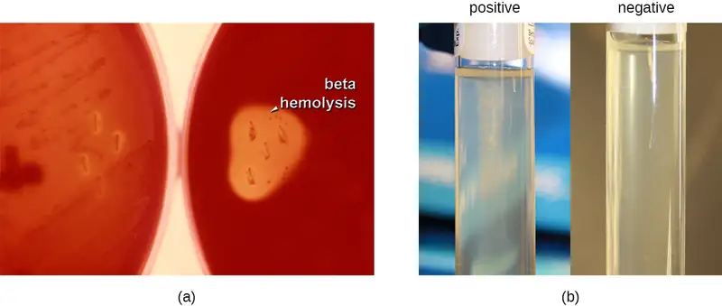
Jump to the next Clinical Focus box. Go back to the previous Clinical Focus box.
9.3 The Effects of pH on Microbial Growth¶
Learning Objectives
By the end of this section, you will be able to:
- Illustrate and briefly describe minimum, optimum, and maximum pH requirements for growth
- Identify and describe the different categories of microbes with pH requirements for growth: acidophiles, neutrophiles, and alkaliphiles
- Give examples of microorganisms for each category of pH requirement
Yogurt, pickles, sauerkraut, and lime-seasoned dishes all owe their tangy taste to a high acid content (Figure 9.25). Recall that acidity is a function of the concentration of hydrogen ions [H+] and is measured as pH. Environments with pH values below 7.0 are considered acidic, whereas those with pH values above 7.0 are considered basic. Extreme pH affects the structure of all macromolecules. The hydrogen bonds holding together strands of DNA break up at high pH. Lipids are hydrolyzed by an extremely basic pH. The proton motive force responsible for production of ATP in cellular respiration depends on the concentration gradient of H+ across the plasma membrane (see Cellular Respiration). If H+ ions are neutralized by hydroxide ions, the concentration gradient collapses and impairs energy production. But the component most sensitive to pH in the cell is its workhorse, the protein. Moderate changes in pH modify the ionization of amino-acid functional groups and disrupt hydrogen bonding, which, in turn, promotes changes in the folding of the molecule, promoting denaturation and destroying activity.
The optimum growth pH is the most favorable pH for the growth of an organism. The lowest pH value that an organism can tolerate is called the minimum growth pH and the highest pH is the maximum growth pH. These values can cover a wide range, which is important for the preservation of food and to microorganisms’ survival in the stomach. For example, the optimum growth pH of Salmonella spp. is 7.0–7.5, but the minimum growth pH is closer to 4.2.
Most bacteria are neutrophiles, meaning they grow optimally at a pH within one or two pH units of the neutral pH of 7 (see Figure 9.26). Most familiar bacteria, like Escherichia coli, staphylococci, and Salmonella spp. are neutrophiles and do not fare well in the acidic pH of the stomach. However, there are pathogenic strains of E. coli, S. typhi, and other species of intestinal pathogens that are much more resistant to stomach acid. In comparison, fungi thrive at slightly acidic pH values of 5.0–6.0.
Microorganisms that grow optimally at pH less than 5.55 are called acidophiles. For example, the sulfur-oxidizing Sulfolobus spp. isolated from sulfur mud fields and hot springs in Yellowstone National Park are extreme acidophiles. These archaea survive at pH values of 2.5–3.5. Species of the archaean genus Ferroplasma live in acid mine drainage at pH values of 0–2.9. Lactobacillus bacteria, which are an important part of the normal microbiota of the vagina, can tolerate acidic environments at pH values 3.5–6.8 and also contribute to the acidity of the vagina (pH of 4, except at the onset of menstruation) through their metabolic production of lactic acid. The vagina’s acidity plays an important role in inhibiting other microbes that are less tolerant of acidity. Acidophilic microorganisms display a number of adaptations to survive in strong acidic environments. For example, proteins show increased negative surface charge that stabilizes them at low pH. Pumps actively eject H+ ions out of the cells. The changes in the composition of membrane phospholipids probably reflect the need to maintain membrane fluidity at low pH.
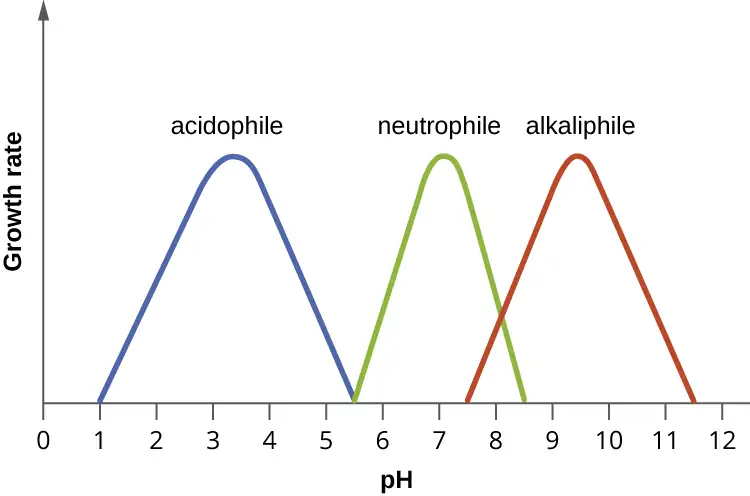
At the other end of the spectrum are alkaliphiles, microorganisms that grow best at pH between 8.0 and 10.5. Vibrio cholerae, the pathogenic agent of cholera, grows best at the slightly basic pH of 8.0; it can survive pH values of 11.0 but is inactivated by the acid of the stomach. When it comes to survival at high pH, the bright pink archaean Natronobacterium, found in the soda lakes of the African Rift Valley, may hold the record at a pH of 10.5 (Figure 9.27). Extreme alkaliphiles have adapted to their harsh environment through evolutionary modification of lipid and protein structure and compensatory mechanisms to maintain the proton motive force in an alkaline environment. For example, the alkaliphile Bacillus firmus derives the energy for transport reactions and motility from a Na+ ion gradient rather than a proton motive force. Many enzymes from alkaliphiles have a higher isoelectric point, due to an increase in the number of basic amino acids, than homologous enzymes from neutrophiles.
Micro Connections: Survival at the Low pH of the Stomach
Peptic ulcers (or stomach ulcers) are painful sores on the stomach lining. Until the 1980s, they were believed to be caused by spicy foods, stress, or a combination of both. Patients were typically advised to eat bland foods, take anti-acid medications, and avoid stress. These remedies were not particularly effective, and the condition often recurred. This all changed dramatically when the real cause of most peptic ulcers was discovered to be a slim, corkscrew-shaped bacterium, Helicobacter pylori. This organism was identified and isolated by Barry Marshall and Robin Warren, whose discovery earned them the Nobel Prize in Medicine in 2005.
The ability of H. pylori to survive the low pH of the stomach would seem to suggest that it is an extreme acidophile. As it turns out, this is not the case. In fact, H. pylori is a neutrophile. So, how does it survive in the stomach? Remarkably, H. pylori creates a microenvironment in which the pH is nearly neutral. It achieves this by producing large amounts of the enzyme urease, which breaks down urea to form NH4+ and CO2. The ammonium ion raises the pH of the immediate environment.
This metabolic capability of H. pylori is the basis of an accurate, noninvasive test for infection. The patient is given a solution of urea containing radioactively labeled carbon atoms. If H. pylori is present in the stomach, it will rapidly break down the urea, producing radioactive CO2 that can be detected in the patient’s breath. Because peptic ulcers may lead to gastric cancer, patients who are determined to have H. pylori infections are treated with antibiotics.
Check Your Understanding
- What effect do extremes of pH have on proteins?
- What pH-adaptive type of bacteria would most human pathogens be?
9.4 Temperature and Microbial Growth¶
Learning Objectives
By the end of this section, you will be able to:
- Illustrate and briefly describe minimum, optimum, and maximum temperature requirements for growth
- Identify and describe different categories of microbes with temperature requirements for growth: psychrophile, psychrotrophs, mesophile, thermophile, hyperthermophile
- Give examples of microorganisms in each category of temperature tolerance
When the exploration of Lake Whillans started in Antarctica, researchers did not expect to find much life. Constant subzero temperatures and lack of obvious sources of nutrients did not seem to be conditions that would support a thriving ecosystem. To their surprise, the samples retrieved from the lake showed abundant microbial life. In a different but equally harsh setting, bacteria grow at the bottom of the ocean in sea vents (Figure 9.28), where temperatures can reach 340 °C (700 °F).
Microbes can be roughly classified according to the range of temperature at which they can grow. The growth rates are the highest at the optimum growth temperature for the organism. The lowest temperature at which the organism can survive and replicate is its minimum growth temperature. The highest temperature at which growth can occur is its maximum growth temperature. The following ranges of permissive growth temperatures are approximate only and can vary according to other environmental factors.
Organisms categorized as mesophiles (“middle loving”) are adapted to moderate temperatures, with optimal growth temperatures ranging from room temperature (about 20 °C) to about 45 °C. As would be expected from the core temperature of the human body, 37 °C (98.6 °F), normal human microbiota and pathogens (e.g., E. coli, Salmonella spp., and Lactobacillus spp.) are mesophiles.
Organisms called psychrotrophs, also known as psychrotolerant, prefer cooler environments, from a high temperature of 25 °C to refrigeration temperature about 4 °C. They are found in many natural environments in temperate climates. They are also responsible for the spoilage of refrigerated food.
Clinical Focus: Resolution
The presence of Listeria in Jeni’s blood suggests that her symptoms are due to listeriosis, an infection caused by L. monocytogenes. Listeriosis is a serious infection with a 20% mortality rate and is a particular risk to Jeni’s fetus. A sample from the amniotic fluid cultured for the presence of Listeria gave negative results. Because the absence of organisms does not rule out the possibility of infection, a molecular test based on the nucleic acid amplification of the 16S ribosomal RNA of Listeria was performed to confirm that no bacteria crossed the placenta. Fortunately, the results from the molecular test were also negative.
Jeni was admitted to the hospital for treatment and recovery. She received a high dose of two antibiotics intravenously for 2 weeks. The preferred drugs for the treatment of listeriosis are ampicillin or penicillin G with an aminoglycoside antibiotic. Resistance to common antibiotics is still rare in Listeria and antibiotic treatment is usually successful. She was released to home care after a week and fully recovered from her infection.
L. monocytogenes is a gram-positive short rod found in soil, water, and food. It is classified as a psychrophile and is halotolerant. Its ability to multiply at refrigeration temperatures (4–10 °C) and its tolerance for high concentrations of salt (up to 10% sodium chloride [NaCl]) make it a frequent source of food poisoning. Because Listeria can infect animals, it often contaminates food such as meat, fish, or dairy products. Contamination of commercial foods can often be traced to persistent biofilms that form on manufacturing equipment that is not sufficiently cleaned.
Listeria infection is relatively common among pregnant people because the elevated levels of progesterone downregulate the immune system, making them more vulnerable to infection. The pathogen can cross the placenta and infect the fetus, often resulting in miscarriage, stillbirth, or fatal neonatal infection. Pregnant people are thus advised to avoid consumption of soft cheeses, refrigerated cold cuts, smoked seafood, and unpasteurized dairy products. Because Listeria bacteria can easily be confused with diphtheroids, another common group of gram-positive rods, it is important to alert the laboratory when listeriosis is suspected.
Go back to the previous Clinical Focus box.
The organisms retrieved from arctic lakes such as Lake Whillans are considered extreme psychrophiles (cold loving). Psychrophiles are microorganisms that can grow at 0 °C and below, have an optimum growth temperature close to
15 °C, and usually do not survive at temperatures above 20 °C. They are found in permanently cold environments such as the deep waters of the oceans. Because they are active at low temperature, psychrophiles and psychrotrophs are important decomposers in cold climates.
Organisms that grow at optimum temperatures of 50 °C to a maximum of 80 °C are called thermophiles (“heat loving”). They do not multiply at room temperature. Thermophiles are widely distributed in hot springs, geothermal soils, and manmade environments such as garden compost piles where the microbes break down kitchen scraps and vegetal material. Examples of thermophiles include Thermus aquaticus and Geobacillus spp. Higher up on the extreme temperature scale we find the hyperthermophiles, which are characterized by growth ranges from 80 °C to a maximum of 110 °C, with some extreme examples that survive temperatures above 121 °C, the average temperature of an autoclave. The hydrothermal vents at the bottom of the ocean are a prime example of extreme environments, with temperatures reaching an estimated 340 °C (Figure 9.28). Microbes isolated from the vents achieve optimal growth at temperatures higher than 100 °C. Noteworthy examples are Pyrobolus and Pyrodictium, archaea that grow at 105 °C and survive autoclaving. Figure 9.29 shows the typical skewed curves of temperature-dependent growth for the categories of microorganisms we have discussed.
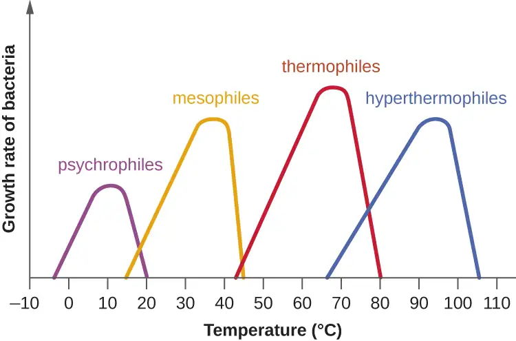
Life in extreme environments raises fascinating questions about the adaptation of macromolecules and metabolic processes. Very low temperatures affect cells in many ways. Membranes lose their fluidity and are damaged by ice crystal formation. Chemical reactions and diffusion slow considerably. Proteins become too rigid to catalyze reactions and may undergo denaturation. At the opposite end of the temperature spectrum, heat denatures proteins and nucleic acids. Increased fluidity impairs metabolic processes in membranes. Some of the practical applications of the destructive effects of heat on microbes are sterilization by steam, pasteurization, and incineration of inoculating loops. Proteins in psychrophiles are, in general, rich in hydrophobic residues, display an increase in flexibility, and have a lower number of secondary stabilizing bonds when compared with homologous proteins from mesophiles. Antifreeze proteins and solutes that decrease the freezing temperature of the cytoplasm are common. The lipids in the membranes tend to be unsaturated to increase fluidity. Growth rates are much slower than those encountered at moderate temperatures. Under appropriate conditions, mesophiles and even thermophiles can survive freezing. Liquid cultures of bacteria are mixed with sterile glycerol solutions and frozen to −80 °C for long-term storage as stocks. Cultures can withstand freeze drying (lyophilization) and then be stored as powders in sealed ampules to be reconstituted with broth when needed.
Macromolecules in thermophiles and hyperthermophiles show some notable structural differences from what is observed in the mesophiles. The ratio of saturated to polyunsaturated lipids increases to limit the fluidity of the cell membranes. Their DNA sequences show a higher proportion of guanine–cytosine nitrogenous bases, which are held together by three hydrogen bonds in contrast to adenine and thymine, which are connected in the double helix by two hydrogen bonds. Additional secondary structures, ionic and covalent bonds, as well as the replacement of key amino acids to stabilize folding, contribute to the resistance of proteins to denaturation. The so-called thermoenzymes purified from thermophiles have important practical applications. For example, amplification of nucleic acids in the polymerase chain reaction (PCR) depends on the thermal stability of Taq polymerase, an enzyme isolated from T. aquaticus. Degradation enzymes from thermophiles are added as ingredients in hot-water detergents, increasing their effectiveness.
Check Your Understanding
- What temperature requirements do most bacterial human pathogens have?
- What DNA adaptation do thermophiles exhibit?
Eye on Ethics: Feeding the World…and the World’s Algae
Artificial fertilizers have become an important tool in food production around the world. They are responsible for many of the gains of the so-called green revolution of the 20th century, which has allowed the planet to feed many of its more than 7 billion people. Artificial fertilizers provide nitrogen and phosphorus, key limiting nutrients, to crop plants, removing the normal barriers that would otherwise limit the rate of growth. Thus, fertilized crops grow much faster, and farms that use fertilizer produce higher crop yields.
However, careless use and overuse of artificial fertilizers have been demonstrated to have significant negative impacts on aquatic ecosystems, both freshwater and marine. Fertilizers that are applied at inappropriate times or in too-large quantities allow nitrogen and phosphorus compounds to escape use by crop plants and enter drainage systems. Inappropriate use of fertilizers in residential settings can also contribute to nutrient loads, which find their way to lakes and coastal marine ecosystems. As water warms and nutrients are plentiful, microscopic algae bloom, often changing the color of the water because of the high cell density.
Most algal blooms are not directly harmful to humans or wildlife; however, they can cause harm indirectly. As the algal population expands and then dies, it provides a large increase in organic matter to the bacteria that live in deep water. With this large supply of nutrients, the population of nonphotosynthetic microorganisms explodes, consuming available oxygen and creating “dead zones” where animal life has virtually disappeared.
Depletion of oxygen in the water is not the only damaging consequence of some algal blooms. The algae that produce red tides in the Gulf of Mexico, Karenia brevis, secrete potent toxins that can kill fish and other organisms and also accumulate in shellfish. Consumption of contaminated shellfish can cause severe neurological and gastrointestinal symptoms in humans. Shellfish beds must be regularly monitored for the presence of the toxins, and harvests are often shut down when it is present, incurring economic costs to the fishery. Cyanobacteria, which can form blooms in marine and freshwater ecosystems, produce toxins called microcystins, which can cause allergic reactions and liver damage when ingested in drinking water or during swimming. Recurring cyanobacterial algal blooms in Lake Erie (Figure 9.30) have forced municipalities to issue drinking water bans for days at a time because of unacceptable toxin levels.
This is just a small sampling of the negative consequences of algal blooms, red tides, and dead zones. Yet the benefits of crop fertilizer—the main cause of such blooms—are difficult to dispute. There is no easy solution to this dilemma, as a ban on fertilizers is not politically or economically feasible. In lieu of this, we must advocate for responsible use and regulation in agricultural and residential contexts, as well as the restoration of wetlands, which can absorb excess fertilizers before they reach lakes and oceans.
Link to Learning
This video discusses algal blooms and dead zones in more depth.
9.5 Other Environmental Conditions that Affect Growth¶
Learning Objectives
By the end of this section, you will be able to:
- Identify and describe different categories of microbes with specific growth requirements other than oxygen, pH, and temperature, such as altered barometric pressure, osmotic pressure, humidity, and light
- Give at least one example microorganism for each category of growth requirement
Microorganisms interact with their environment along more dimensions than pH, temperature, and free oxygen levels, although these factors require significant adaptations. We also find microorganisms adapted to varying levels of salinity, barometric pressure, humidity, and light.
Osmotic and Barometric Pressure¶
Most natural environments tend to have lower solute concentrations than the cytoplasm of most microorganisms. Rigid cell walls protect the cells from bursting in a dilute environment. Not much protection is available against high osmotic pressure. In this case, water, following its concentration gradient, flows out of the cell. This results in plasmolysis (the shrinking of the protoplasm away from the intact cell wall) and cell death. This fact explains why brines and layering meat and fish in salt are time-honored methods of preserving food. Microorganisms called halophiles (“salt loving”) actually require high salt concentrations for growth. These organisms are found in marine environments where salt concentrations hover at 3.5%. Extreme halophilic microorganisms, such as the red alga Dunaliella salina and the archaeal species Halobacterium in Figure 9.31, grow in hypersaline lakes such as the Great Salt Lake, which is 3.5–8 times saltier than the ocean, and the Dead Sea, which is 10 times saltier than the ocean.
Dunaliella spp. counters the tremendous osmotic pressure of the environment with a high cytoplasmic concentration of glycerol and by actively pumping out salt ions. Halobacterium spp. accumulates large concentrations of K+ and other ions in its cytoplasm. Its proteins are designed for high salt concentrations and lose activity at salt concentrations below 1–2 M. Although most halotolerant organisms, for example Halomonas spp. in salt marshes, do not need high concentrations of salt for growth, they will survive and divide in the presence of high salt. Not surprisingly, the staphylococci, micrococci, and corynebacteria that colonize our skin tolerate salt in their environment. Halotolerant pathogens are an important cause of food-borne illnesses because they survive and multiply in salty food. For example, the halotolerant bacteria S. aureus, Bacillus cereus, and V. cholerae produce dangerous enterotoxins and are major causes of food poisoning.
Microorganisms depend on available water to grow. Available moisture is measured as water activity (aw), which is the ratio of the vapor pressure of the medium of interest to the vapor pressure of pure distilled water; therefore, the aw of water is equal to 1.0. Bacteria require high aw (0.97–0.99), whereas fungi can tolerate drier environments; for example, the range of aw for growth of Aspergillus spp. is 0.8–0.75. Decreasing the water content of foods by drying, as in jerky, or through freeze-drying or by increasing osmotic pressure, as in brine and jams, are common methods of preventing spoilage.
Microorganisms that require high atmospheric pressure for growth are called barophiles. The bacteria that live at the bottom of the ocean must be able to withstand great pressures. Because it is difficult to retrieve intact specimens and reproduce such growth conditions in the laboratory, the characteristics of these microorganisms are largely unknown.
Light¶
Photoautotrophs, such as cyanobacteria or green sulfur bacteria, and photoheterotrophs, such as purple nonsulfur bacteria, depend on sufficient light intensity at the wavelengths absorbed by their pigments to grow and multiply. Energy from light is captured by pigments and converted into chemical energy that drives carbon fixation and other metabolic processes. The portion of the electromagnetic spectrum that is absorbed by these organisms is defined as photosynthetically active radiation (PAR). It lies within the visible light spectrum ranging from 400 to 700 nanometers (nm) and extends in the near infrared for some photosynthetic bacteria. A number of accessory pigments, such as fucoxanthin in brown algae and phycobilins in cyanobacteria, widen the useful range of wavelengths for photosynthesis and compensate for the low light levels available at greater depths of water. Other microorganisms, such as the archaea of the class Halobacteria, use light energy to drive their proton and sodium pumps. The light is absorbed by a pigment protein complex called bacteriorhodopsin, which is similar to the eye pigment rhodopsin. Photosynthetic bacteria are present not only in aquatic environments but also in soil and in symbiosis with fungi in lichens. The peculiar watermelon snow is caused by a microalga Chlamydomonas nivalis, a green alga rich in a secondary red carotenoid pigment (astaxanthin) which gives the pink hue to the snow where the alga grows.
Check Your Understanding
- Which photosynthetic pigments were described in this section?
- What is the fundamental stress of a hypersaline environment for a cell?
9.6 Media Used for Bacterial Growth¶
Learning Objectives
By the end of this section, you will be able to:
- Identify and describe culture media for the growth of bacteria, including examples of all-purpose media, enriched, selective, differential, defined, and enrichment media
The study of microorganisms is greatly facilitated if we are able to culture them, that is, to keep reproducing populations alive under laboratory conditions. Culturing many microorganisms is challenging because of highly specific nutritional and environmental requirements and the diversity of these requirements among different species.
Nutritional Requirements¶
The number of available media to grow bacteria is considerable. Some media are considered general all-purpose media and support growth of a large variety of organisms. A prime example of an all-purpose medium is tryptic soy broth (TSB). Specialized media are used in the identification of bacteria and are supplemented with dyes, pH indicators, or antibiotics. One type, enriched media, contains growth factors, vitamins, and other essential nutrients to promote the growth of fastidious organisms, organisms that cannot make certain nutrients and require them to be added to the medium. When the complete chemical composition of a medium is known, it is called a chemically defined medium. For example, in EZ medium, all individual chemical components are identified and the exact amounts of each is known. In complex media, which contain extracts and digests of yeasts, meat, or plants, the precise chemical composition of the medium is not known. Amounts of individual components are undetermined and variable. Nutrient broth, tryptic soy broth, and brain heart infusion, are all examples of complex media.
Non-selective media support the growth of all microorganisms without any specific inhibition. They may be used to cultivate organisms for other uses, as well as in specific procedures. The Mueller-Hinton agar, developed by John Mueller and Jane Hinton, is a non-selective media often used to test antibiotics and such as in the Kirby-Bauer disc diffusion test (described in the chapter on Antimicrobial Drugs). In addition to beef extract and agar, it contains starch, which supports growth and also absorbs toxins, which ensures that the antibiotics continue to function. Mueller-Hinton agar is also known as a loose agar, which allows chemicals to diffuse more effectively than similar substances.
Media that inhibit the growth of unwanted microorganisms and support the growth of the organism of interest by supplying nutrients and reducing competition are called selective media. An example of a selective medium is MacConkey agar. It contains bile salts and crystal violet, which interfere with the growth of many gram-positive bacteria and favor the growth of gram-negative bacteria, particularly the Enterobacteriaceae. These species are commonly named enterics, reside in the intestine, and are adapted to the presence of bile salts. The enrichment cultures foster the preferential growth of a desired microorganism that represents a fraction of the organisms present in an inoculum. For example, if we want to isolate bacteria that break down crude oil, hydrocarbonoclastic bacteria, sequential subculturing in a medium that supplies carbon only in the form of crude oil will enrich the cultures with oil-eating bacteria. The differential media make it easy to distinguish colonies of different bacteria by a change in the color of the colonies or the color of the medium. Color changes are the result of end products created by interaction of bacterial enzymes with differential substrates in the medium or, in the case of hemolytic reactions, the lysis of red blood cells in the medium. In Figure 9.32, the differential fermentation of lactose can be observed on MacConkey agar. The lactose fermenters produce acid, which turns the medium and the colonies of strong fermenters hot pink. The medium is supplemented with the pH indicator neutral red, which turns to hot pink at low pH. Selective and differential media can be combined and play an important role in the identification of bacteria by biochemical methods.
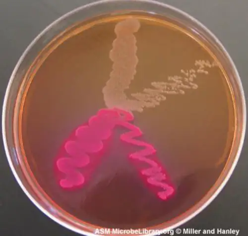
Check Your Understanding
- Distinguish complex and chemically defined media.
- Distinguish selective and enrichment media.
Link to Learning
Compare the compositions of EZ medium and sheep blood agar.
Case in Point: The End-of-Year Picnic
The microbiology department is celebrating the end of the school year in May by holding its traditional picnic on the green. The speeches drag on for a couple of hours, but finally all the faculty and students can dig into the food: chicken salad, tomatoes, onions, salad, and custard pie. By evening, the whole department, except for two vegetarian students who did not eat the chicken salad, is stricken with nausea, vomiting, retching, and abdominal cramping. Several individuals complain of diarrhea. One patient shows signs of shock (low blood pressure). Blood and stool samples are collected from patients, and an analysis of all foods served at the meal is conducted.
Bacteria can cause gastroenteritis (inflammation of the stomach and intestinal tract) either by colonizing and replicating in the host, which is considered an infection, or by secreting toxins, which is considered intoxication. Signs and symptoms of infections are typically delayed, whereas intoxication manifests within hours, as happened after the picnic.
Blood samples from the patients showed no signs of bacterial infection, which further suggests that this was a case of intoxication. Since intoxication is due to secreted toxins, bacteria are not usually detected in blood or stool samples. MacConkey agar and sorbitol-MacConkey agar plates and xylose-lysine-deoxycholate (XLD) plates were inoculated with stool samples and did not reveal any unusually colored colonies, and no black colonies or white colonies were observed on XLD. All lactose fermenters on MacConkey agar also ferment sorbitol. These results ruled out common agents of food-borne illnesses: E. coli, Salmonella spp., and Shigella spp.
Analysis of the chicken salad revealed an abnormal number of gram-positive cocci arranged in clusters (Figure 9.33). A culture of the gram-positive cocci releases bubbles when mixed with hydrogen peroxide. The culture turned mannitol salt agar yellow after a 24-hour incubation.
All the tests point to Staphylococcus aureus as the organism that secreted the toxin. Samples from the salad showed the presence of gram-positive cocci bacteria in clusters. The colonies were positive for catalase. The bacteria grew on mannitol salt agar fermenting mannitol, as shown by the change to yellow of the medium. The pH indicator in mannitol salt agar is phenol red, which turns to yellow when the medium is acidified by the products of fermentation.
The toxin secreted by S. aureus is known to cause severe gastroenteritis. The organism was probably introduced into the salad during preparation by the food handler and multiplied while the salad was kept in the warm ambient temperature during the speeches.
- What are some other factors that might have contributed to rapid growth of S. aureus in the chicken salad?
- Why would S. aureus not be inhibited by the presence of salt in the chicken salad?
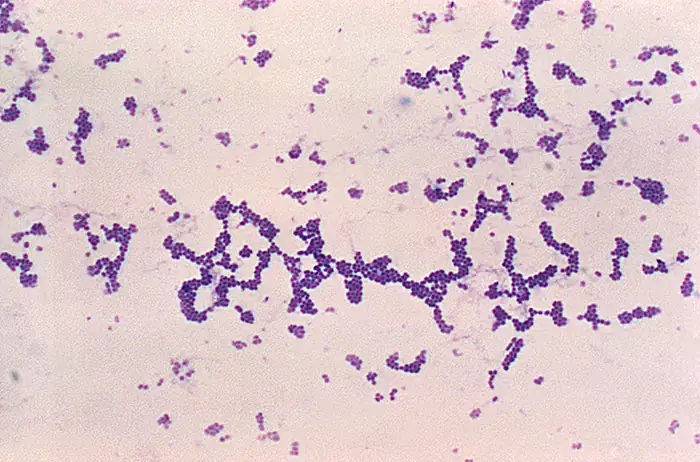
Chapter Review¶
Key Concepts and Summary¶
9.1 How Microbes Grow¶
- Most bacterial cells divide by binary fission. Generation time in bacterial growth is defined as the doubling time of the population.
- Cells in a closed system follow a pattern of growth with four phases: lag, logarithmic (exponential), stationary, and death.
- Cells can be counted by direct viable cell count. The pour plate and spread plate methods are used to plate serial dilutions into or onto, respectively, agar to allow counting of viable cells that give rise to colony-forming units. Membrane filtration is used to count live cells in dilute solutions. The most probable cell number (MPN) method allows estimation of cell numbers in cultures without using solid media.
- Indirect methods can be used to estimate culture density by measuring turbidity of a culture or live cell density by measuring metabolic activity.
- Other patterns of cell division include multiple nucleoid formation in cells; asymmetric division, as in budding; and the formation of hyphae and terminal spores.
- Biofilms are communities of microorganisms enmeshed in a matrix of extracellular polymeric substance. The formation of a biofilm occurs when planktonic cells attach to a substrate and become sessile. Cells in biofilms coordinate their activity by communicating through quorum sensing.
- Biofilms are commonly found on surfaces in nature and in the human body, where they may be beneficial or cause severe infections. Pathogens associated with biofilms are often more resistant to antibiotics and disinfectants.
9.2 Oxygen Requirements for Microbial Growth¶
- Aerobic and anaerobic environments can be found in diverse niches throughout nature, including different sites within and on the human body.
- Microorganisms vary in their requirements for molecular oxygen. Obligate aerobes depend on aerobic respiration and use oxygen as a terminal electron acceptor. They cannot grow without oxygen.
- Obligate anaerobes cannot grow in the presence of oxygen. They depend on fermentation and anaerobic respiration using a final electron acceptor other than oxygen.
- Facultative anaerobes show better growth in the presence of oxygen but will also grow without it.
- Although aerotolerant anaerobes do not perform aerobic respiration, they can grow in the presence of oxygen. Most aerotolerant anaerobes test negative for the enzyme catalase.
- Microaerophiles need oxygen to grow, albeit at a lower concentration than 21% oxygen in air.
- Optimum oxygen concentration for an organism is the oxygen level that promotes the fastest growth rate. The minimum permissive oxygen concentration and the maximum permissive oxygen concentration are, respectively, the lowest and the highest oxygen levels that the organism will tolerate.
- Peroxidase, superoxide dismutase, and catalase are the main enzymes involved in the detoxification of the reactive oxygen species. Superoxide dismutase is usually present in a cell that can tolerate oxygen. All three enzymes are usually detectable in cells that perform aerobic respiration and produce more ROS.
- A capnophile is an organism that requires a higher than atmospheric concentration of CO2 to grow.
9.3 The Effects of pH on Microbial Growth¶
- Bacteria are generally neutrophiles. They grow best at neutral pH close to 7.0.
- Acidophiles grow optimally at a pH near 3.0. Alkaliphiles are organisms that grow optimally between a pH of 8 and 10.5. Extreme acidophiles and alkaliphiles grow slowly or not at all near neutral pH.
- Microorganisms grow best at their optimum growth pH. Growth occurs slowly or not at all below the minimum growth pH and above the maximum growth pH.
9.4 Temperature and Microbial Growth¶
- Microorganisms thrive at a wide range of temperatures; they have colonized different natural environments and have adapted to extreme temperatures. Both extreme cold and hot temperatures require evolutionary adjustments to macromolecules and biological processes.
- Psychrophiles grow best in the temperature range of 0–15 °C whereas psychrotrophs thrive between 4°C and 25 °C.
- Mesophiles grow best at moderate temperatures in the range of 20 °C to about 45 °C. Pathogens are usually mesophiles.
- Thermophiles and hyperthemophiles are adapted to life at temperatures above 50 °C.
- Adaptations to cold and hot temperatures require changes in the composition of membrane lipids and proteins.
9.5 Other Environmental Conditions that Affect Growth¶
- Halophiles require high salt concentration in the medium, whereas halotolerant organisms can grow and multiply in the presence of high salt but do not require it for growth.
- Halotolerant pathogens are an important source of foodborne illnesses because they contaminate foods preserved in salt.
- Photosynthetic bacteria depend on visible light for energy.
- Most bacteria, with few exceptions, require high moisture to grow.
9.6 Media Used for Bacterial Growth¶
- Chemically defined media contain only chemically known components.
- Selective media favor the growth of some microorganisms while inhibiting others.
- Enriched media contain added essential nutrients a specific organism needs to grow
- Differential media help distinguish bacteria by the color of the colonies or the change in the medium.
Multiple Choice¶
9.1 How Microbes Grow¶
1. Which of the following methods would be used to measure the concentration of bacterial contamination in processed peanut butter?
- turbidity measurement
- total plate count
- dry weight measurement
- direct counting of bacteria on a calibrated slide under the microscope
Answer
B
2. In which phase would you expect to observe the most endospores in a Bacillus cell culture?
- death phase
- lag phase
- log phase
- log, lag, and death phases would all have roughly the same number of endospores.
Answer
A
3. During which phase would penicillin, an antibiotic that inhibits cell-wall synthesis, be most effective?
- death phase
- lag phase
- log phase
- stationary phase
Answer
C
4. Which of the following is the best definition of generation time in a bacterium?
- the length of time it takes to reach the log phase
- the length of time it takes for a population of cells to double
- the time it takes to reach stationary phase
- the length of time of the exponential phase
Answer
B
5. What is the function of the Z ring in binary fission?
- It controls the replication of DNA.
- It forms a contractile ring at the septum.
- It separates the newly synthesized DNA molecules.
- It mediates the addition of new peptidoglycan subunits.
Answer
B
6. If a culture starts with 50 cells, how many cells will be present after five generations with no cell death?
- 200
- 400
- 1600
- 3200
Answer
C
7. Filamentous cyanobacteria often divide by which of the following?
- budding
- mitosis
- fragmentation
- formation of endospores
Answer
C
8. Which is a reason for antimicrobial resistance being higher in a biofilm than in free-floating bacterial cells?
- The EPS allows faster diffusion of chemicals in the biofilm.
- Cells are more metabolically active at the base of a biofilm.
- Cells are metabolically inactive at the base of a biofilm.
- The structure of a biofilm favors the survival of antibiotic resistant cells.
Answer
C
9. Quorum sensing is used by bacterial cells to determine which of the following?
- the size of the population
- the availability of nutrients
- the speed of water flow
- the density of the population
Answer
D
10. Which of the following statements about autoinducers is incorrect?
- They bind directly to DNA to activate transcription.
- They can activate the cell that secreted them.
- N-acylated homoserine lactones are autoinducers in gram-negative cells.
- Autoinducers may stimulate the production of virulence factors.
Answer
A
9.2 Oxygen Requirements for Microbial Growth¶
11. An inoculated thioglycolate medium culture tube shows dense growth at the surface and turbidity throughout the rest of the tube. What is your conclusion?
- The organisms die in the presence of oxygen
- The organisms are facultative anaerobes.
- The organisms should be grown in an anaerobic chamber.
- The organisms are obligate aerobes.
Answer
B
12. An inoculated thioglycolate medium culture tube is clear throughout the tube except for dense growth at the bottom of the tube. What is your conclusion?
- The organisms are obligate anaerobes.
- The organisms are facultative anaerobes.
- The organisms are aerotolerant.
- The organisms are obligate aerobes.
Answer
A
13. Pseudomonas aeruginosa is a common pathogen that infects the airways of patients with cystic fibrosis. It does not grow in the absence of oxygen. The bacterium is probably which of the following?
- an aerotolerant anaerobe
- an obligate aerobe
- an obligate anaerobe
- a facultative anaerobe
Answer
B
14. Streptococcus mutans is a major cause of cavities. It resides in the gum pockets, does not have catalase activity, and can be grown outside of an anaerobic chamber. The bacterium is probably which of the following?
- a facultative anaerobe
- an obligate aerobe
- an obligate anaerobe
- an aerotolerant anaerobe
Answer
D
15. Why do the instructions for the growth of Neisseria gonorrhoeae recommend a CO2-enriched atmosphere?
- It uses CO2 as a final electron acceptor in respiration.
- It is an obligate anaerobe.
- It is a capnophile.
- It fixes CO2 through photosynthesis.
Answer
C
9.3 The Effects of pH on Microbial Growth¶
16. Bacteria that grow in mine drainage at pH 1–2 are probably which of the following?
- alkaliphiles
- acidophiles
- neutrophiles
- obligate anaerobes
Answer
B
17. Bacteria isolated from Lake Natron, where the water pH is close to 10, are which of the following?
- alkaliphiles
- facultative anaerobes
- neutrophiles
- obligate anaerobes
Answer
A
18. In which environment are you most likely to encounter an acidophile?
- human blood at pH 7.2
- a hot vent at pH 1.5
- human intestine at pH 8.5
- milk at pH 6.5
Answer
B
9.4 Temperature and Microbial Growth¶
19. A soup container was forgotten in the refrigerator and shows contamination. The contaminants are probably which of the following?
- thermophiles
- acidophiles
- mesophiles
- psychrotrophs
Answer
D
20. Bacteria isolated from a hot tub at 39 °C are probably which of the following?
- thermophiles
- psychrotrophs
- mesophiles
- hyperthermophiles
Answer
C
21. In which environment are you most likely to encounter a hyperthermophile?
- hot tub
- warm ocean water in Florida
- hydrothermal vent at the bottom of the ocean
- human body
Answer
C
22. Which of the following environments would harbor psychrophiles?
- mountain lake with a water temperature of 12 °C
- contaminated plates left in a 35 °C incubator
- yogurt cultured at room temperature
- salt pond in the desert with a daytime temperature of 34 °C
Answer
A
9.5 Other Environmental Conditions that Affect Growth¶
23. Which of the following is the reason jams and dried meats often do not require refrigeration to prevent spoilage?
- low pH
- toxic alkaline chemicals
- naturally occurring antibiotics
- low water activity
Answer
D
24. Bacteria living in salt marshes are most likely which of the following?
- acidophiles
- barophiles
- halotolerant
- thermophiles
Answer
C
9.6 Media Used for Bacterial Growth¶
25. EMB agar is a medium used in the identification and isolation of pathogenic bacteria. It contains digested meat proteins as a source of organic nutrients. Two indicator dyes, eosin and methylene blue, inhibit the growth of gram-positive bacteria and distinguish between lactose fermenting and nonlactose fermenting organisms. Lactose fermenters form metallic green or deep purple colonies, whereas the nonlactose fermenters form completely colorless colonies. EMB agar is an example of which of the following?
- a selective medium only
- a differential medium only
- a selective medium and a chemically defined medium
- a selective medium, a differential medium, and a complex medium
Answer
D
26. Haemophilus influenzae must be grown on chocolate agar, which is blood agar treated with heat to release growth factors in the medium. H. influenzae is described as ________.
- an acidophile
- a thermophile
- an obligate anaerobe
- fastidious
Answer
D
Fill in the Blank¶
9.1 How Microbes Grow¶
27. Direct count of total cells can be performed using a ________ or a ________.
Answer
hemocytometer, Petroff-Hausser counting chamber
28. The ________ method allows direct count of total cells growing on solid medium.
Answer
plate count
29. A statistical estimate of the number of live cells in a liquid is usually done by ________.
Answer
most probable number
30. For this indirect method of estimating the growth of a culture, you measure ________ using a spectrophotometer.
Answer
turbidity
31. Active growth of a culture may be estimated indirectly by measuring the following products of cell metabolism: ________ or ________.
Answer
ATP, acid from fermentation
9.3 The Effects of pH on Microbial Growth¶
32. A bacterium that thrives in a soda lake where the average pH is 10.5 can be classified as a(n) ________.
Answer
alkaliphile
33. Lactobacillus acidophilus grows best at pH 4.5. It is considered a(n) ________.
Answer
acidophile
9.5 Other Environmental Conditions that Affect Growth¶
34. A bacterium that thrives in the Great Salt Lake but not in fresh water is probably a ________.
Answer
halophile
35. Bacteria isolated from the bottom of the ocean need high atmospheric pressures to survive. They are ________.
Answer
barophiles
36. Staphylococcus aureus can be grown on multipurpose growth medium or on mannitol salt agar that contains 7.5% NaCl. The bacterium is ________.
Answer
halotolerant
9.6 Media Used for Bacterial Growth¶
37. Blood agar contains many unspecified nutrients, supports the growth of a large number of bacteria, and allows differentiation of bacteria according to hemolysis (breakdown of blood). The medium is ________ and ________.
Answer
complex, differential
38. Rogosa agar contains yeast extract. The pH is adjusted to 5.2 and discourages the growth of many microorganisms; however, all the colonies look similar. The medium is ________ and ________.
Answer
complex, selective
Matching¶
9.1 How Microbes Grow¶
39. Match the definition with the name of the growth phase in the growth curve.
| ___Number of dying cells is higher than the number of cells dividing | A. Lag phase |
| ___Number of new cells equal to number of dying cells | B. Log phase |
| ___New enzymes to use available nutrients are induced | C. Stationary phase |
| ___Binary fission is occurring at maximum rate | D. Death phase |
Answer
D, C, A, B
9.2 Oxygen Requirements for Microbial Growth¶
40. Four tubes are illustrated with cultures grown in a medium that slows oxygen diffusion. Match the culture tube with the correct type of bacteria from the following list: facultative anaerobe, obligate anaerobe, microaerophile, aerotolerant anaerobe, obligate aerobe.
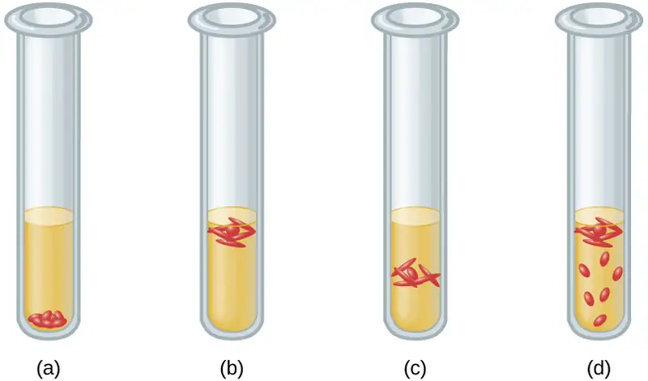
Answer
(a) obligate anaerobe, (b) obligate aerobe, (c) microaerophile, (d) facultative anaerobe
9.4 Temperature and Microbial Growth¶
41. Match the type of bacterium with its environment. Each choice may be used once, more than once, or not at all. Put the appropriate letter beside the environment.
| ___psychotroph | A. food spoiling in refrigerator |
| ___mesophile | B. hydrothermal vent |
| ___thermophile | C. deep ocean waters |
| ___hyperthermophile | D. human pathogen |
| ___psychrophile | E. garden compost |
Answer
A, D, E, B, C
Short Answer¶
9.1 How Microbes Grow¶
42. Why is it important to measure the transmission of light through a control tube with only broth in it when making turbidity measures of bacterial cultures?
43. In terms of counting cells, what does a plating method accomplish that an electronic cell counting method does not?
44. Order the following stages of the development of a biofilm from the earliest to the last step.
- secretion of EPS
- reversible attachment
- dispersal
- formation of water channels
- irreversible attachment
45. Infections among hospitalized patients are often related to the presence of a medical device in the patient. Which conditions favor the formation of biofilms on in-dwelling catheters and prostheses?
9.2 Oxygen Requirements for Microbial Growth¶
46. Why are some obligate anaerobes able to grow in tissues (e.g., gum pockets) that are not completely free of oxygen?
47. Why should Haemophilus influenzae be grown in a candle jar?
48. In terms of oxygen requirements, what type of organism would most likely be responsible for a foodborne illness associated with canned foods?
9.3 The Effects of pH on Microbial Growth¶
49. Which macromolecule in the cell is most sensitive to changes in pH?
50. Which metabolic process in the bacterial cell is particularly challenging at high pH?
9.4 Temperature and Microbial Growth¶
51. How are hyperthermophile’s proteins adapted to the high temperatures of their environment?
52. Why would NASA be funding microbiology research in Antarctica?
9.5 Other Environmental Conditions that Affect Growth¶
53. Fish sauce is a salty condiment produced using fermentation. What type of organism is likely responsible for the fermentation of the fish sauce?
9.6 Media Used for Bacterial Growth¶
54. What is the major difference between an enrichment culture and a selective culture?
Critical Thinking¶
9.1 How Microbes Grow¶
55. A patient in the hospital has an intravenous catheter inserted to allow for the delivery of medications, fluids, and electrolytes. Four days after the catheter is inserted, the patient develops a fever and an infection in the skin around the catheter. Blood cultures reveal that the patient has a blood-borne infection. Tests in the clinical laboratory identify the blood-borne pathogen as Staphylococcus epidermidis, and antibiotic susceptibility tests are performed to provide doctors with essential information for selecting the best drug for treatment of the infection. Antibacterial chemotherapy is initiated and delivered through the intravenous catheter that was originally inserted into the patient. Within 7 days, the skin infection is gone, blood cultures are negative for S. epidermidis, and the antibacterial chemotherapy is discontinued. However, 2 days after discontinuing the antibacterial chemotherapy, the patient develops another fever and skin infection and the blood cultures are positive for the same strain of S. epidermidis that had been isolated the previous week. This time, doctors remove the intravenous catheter and administer oral antibiotics, which successfully treat both the skin and blood-borne infection caused by S. epidermidis. Furthermore, the infection does not return after discontinuing the oral antibacterial chemotherapy. What are some possible reasons why intravenous chemotherapy failed to completely cure the patient despite laboratory tests showing the bacterial strain was susceptible to the prescribed antibiotic? Why might the second round of antibiotic therapy have been more successful? Justify your answers.
56. Why are autoinducers small molecules?
57. Refer to Figure B1 in Appendix B. If the results from a pond water sample were recorded as 3, 2, 1, what would be the MPN of bacteria in 100 mL of pond water?
58. Refer to Figure 9.15. Why does turbidity lose reliability at high cell concentrations when the culture reaches the stationary phase?
9.2 Oxygen Requirements for Microbial Growth¶
59. A microbiology instructor prepares cultures for a gram-staining practical laboratory by inoculating growth medium with a gram-positive coccus (nonmotile) and a gram-negative rod (motile). The goal is to demonstrate staining of a mixed culture. The flask is incubated at 35 °C for 24 hours without aeration. A sample is stained and reveals only gram-negative rods. Both cultures are known facultative anaerobes. Give a likely reason for success of the gram-negative rod. Assume that the cultures have comparable intrinsic growth rates.
9.3 The Effects of pH on Microbial Growth¶
60. People who use proton pumps inhibitors or antacids are more prone to infections of the gastrointestinal tract. Can you explain the observation in light of what you have learned?
9.4 Temperature and Microbial Growth¶
61. The bacterium that causes Hansen’s disease (leprosy), Mycobacterium leprae, infects mostly the extremities of the body: hands, feet, and nose. Can you make an educated guess as to its optimum temperature of growth?
62. Refer to Figure 9.29. Some hyperthermophiles can survive autoclaving temperatures. Are they a concern in health care?
9.6 Media Used for Bacterial Growth¶
63. Haemophilus, influenzae grows best at 35–37 °C with ~5% CO2 (or in a candle-jar) and requires hemin (X factor) and nicotinamide-adenine-dinucleotide (NAD, also known as V factor) for growth. (Centers for Disease Control and Prevention, World Health Organization. “CDC Laboratory Methods for the Diagnosis of Meningitis Caused by Neisseria meningitidis, Streptococcus pneumoniae, and Haemophilus influenza. WHO Manual, 2nd edition.” 2011. http://www.cdc.gov/meningitis/lab-manual/full-manual.pdf) Using the vocabulary learned in this chapter, describe H. influenzae.
Adapted from Microbiology by OpenStax, licensed under CC BY 4.0. Access the original for free at openstax.org. Changes: converted to the web reading format of The Open Book Project.
-
Flores, P., McBride, S.A., Galazka, J.M. et al. (2023). Biofilm formation of Pseudomonas aeruginosa in spaceflight is minimized on lubricant impregnated surfaces. Nature Microgravity 9, 66. ↩
-
Centers for Disease Control and Prevention. “Living With Diabetes: Keep Your Feet Healthy.” http://www.cdc.gov/Features/DiabetesFootHealth/ ↩